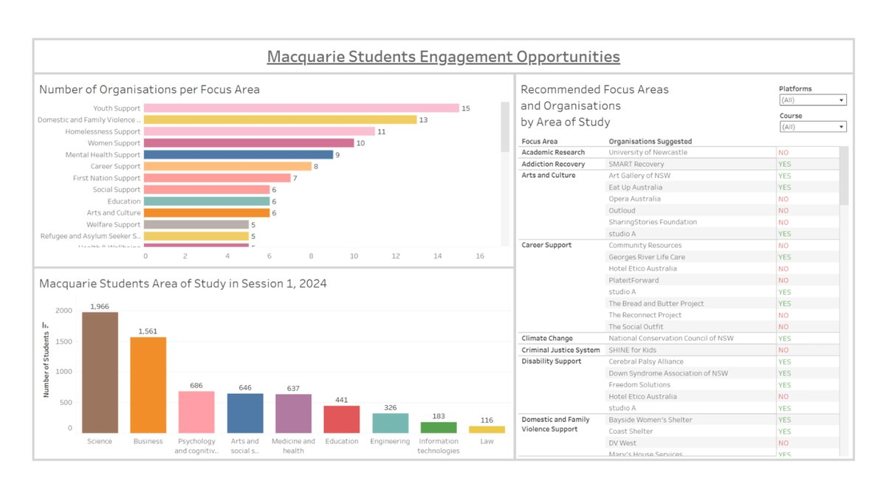

Tableau
Business Analytics Project
- Overview: an interactive Tableau dashboard built for a real client, Impact100 Sydney, through a university program.
- Approach: gathered and cleaned data on 50+ charity organisations, then designed 3 dashboards tailored to different user types.
- Outcome: a working tool the client could use to explore funding trends and volunteering opportunities, presented to them directly.
TableauExcel
View on GitHub